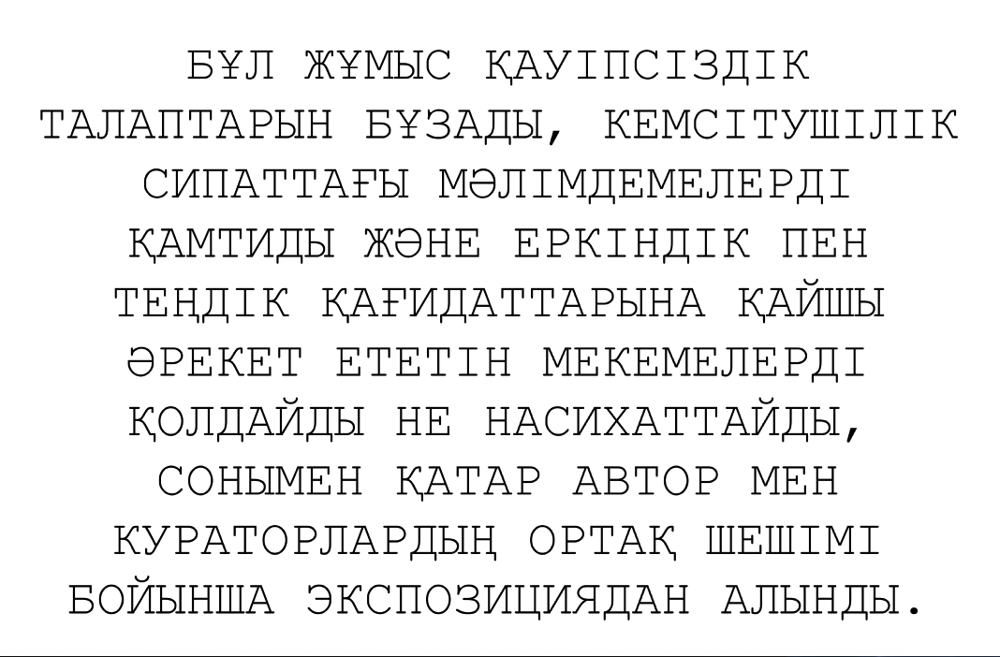

Tuntematon (Сергей Добрыднев). Я ЗНАЮ. Клёново, Россия
Работа «Я ЗНАЮ» существует сегодня не как физический объект, а как событие отсутствия. Вместо неё в пространстве находится лист А4 с текстом, фиксирующим факт изъятия на основании формулировок, совпадающих с критериями исключения самого фестиваля: «нарушает нормы безопасности, содержит дискриминационные высказывания и продвигает институции, действующие вразрез с принципами свободы и равенства». Этот текст - не комментарий к работе, а сама работа в её актуальном состоянии.
В контексте темы Unframed и запроса M_gallery об изображении как высказывании, проходящем через серию рамок - цифровую, географическую, материальную, пространственную, - «Я ЗНАЮ» предъявляет последнюю рамку: институциональную. Ту, которая решает, быть ли изображению вообще.
Эта работа обнажает механизм, по которому высказывание либо допускается, либо исключается. Она не содержит изображений, не транслирует дискриминации и не продвигает институций. Она лишь воспроизводит формулировку, уже применённую к ней однажды. Вопрос — не в том, что сказано, а в том, кто и когда решает, что этого не должно быть.
Автор доверяет кураторскому решению и открыт к диалогу.
В контексте темы Unframed и запроса M_gallery об изображении как высказывании, проходящем через серию рамок - цифровую, географическую, материальную, пространственную, - «Я ЗНАЮ» предъявляет последнюю рамку: институциональную. Ту, которая решает, быть ли изображению вообще.
Эта работа обнажает механизм, по которому высказывание либо допускается, либо исключается. Она не содержит изображений, не транслирует дискриминации и не продвигает институций. Она лишь воспроизводит формулировку, уже применённую к ней однажды. Вопрос — не в том, что сказано, а в том, кто и когда решает, что этого не должно быть.
Автор доверяет кураторскому решению и открыт к диалогу.
- - -